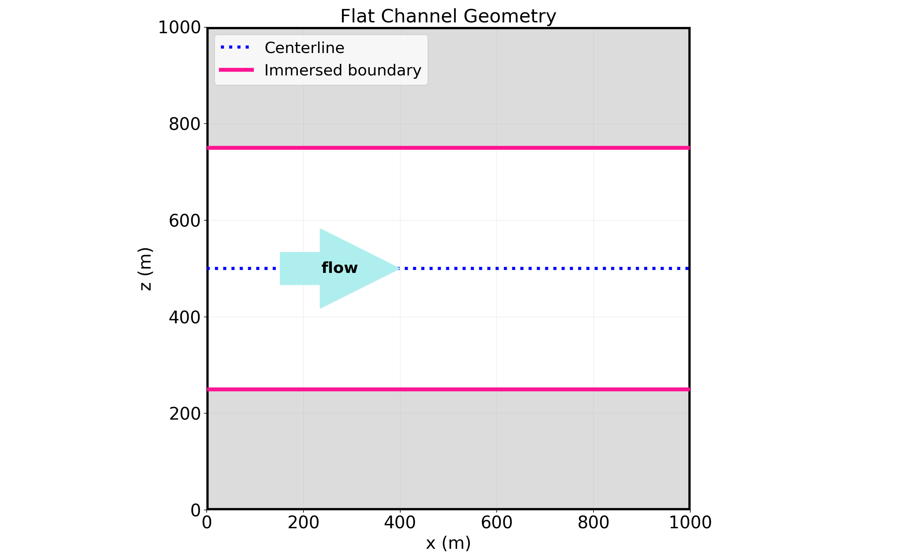
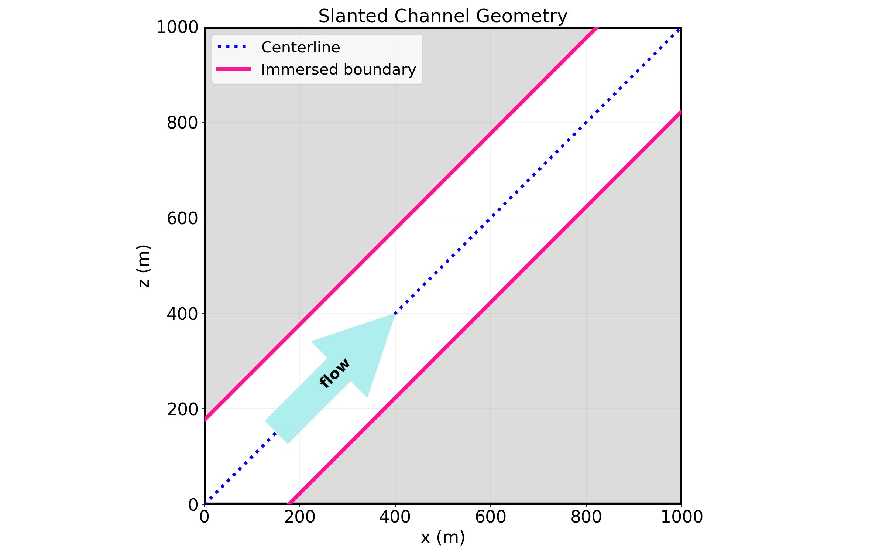
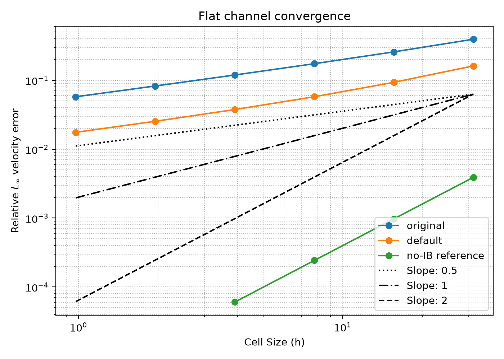
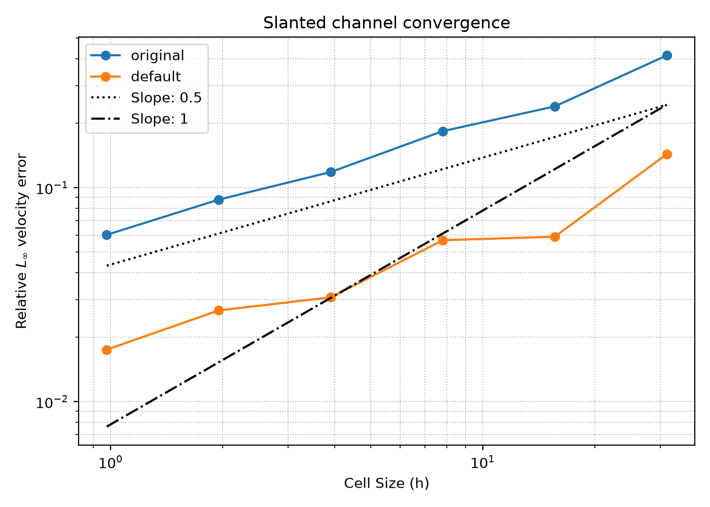
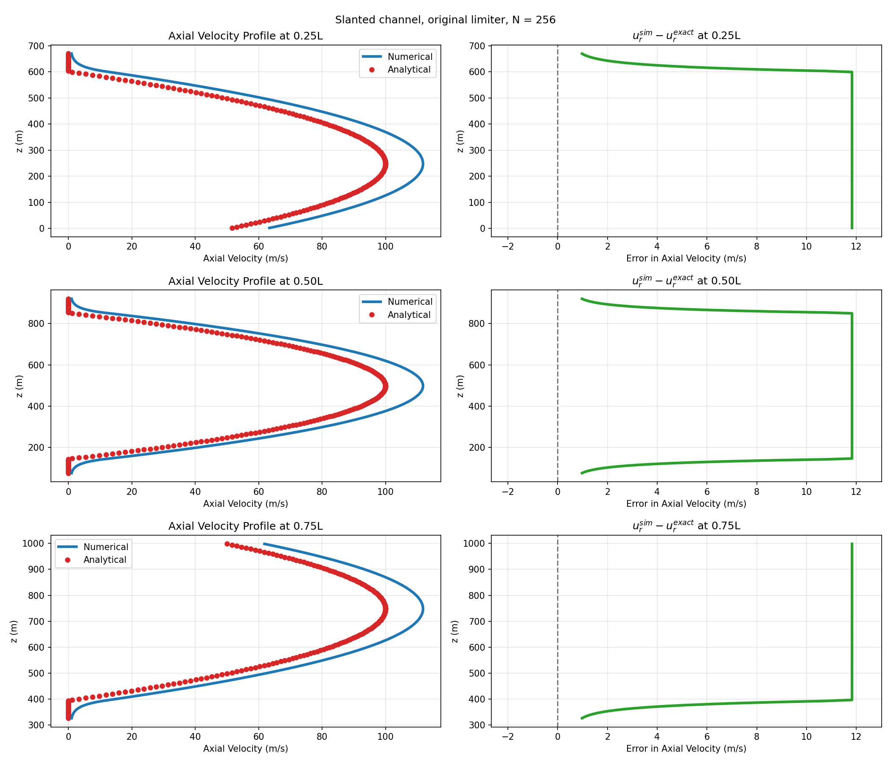
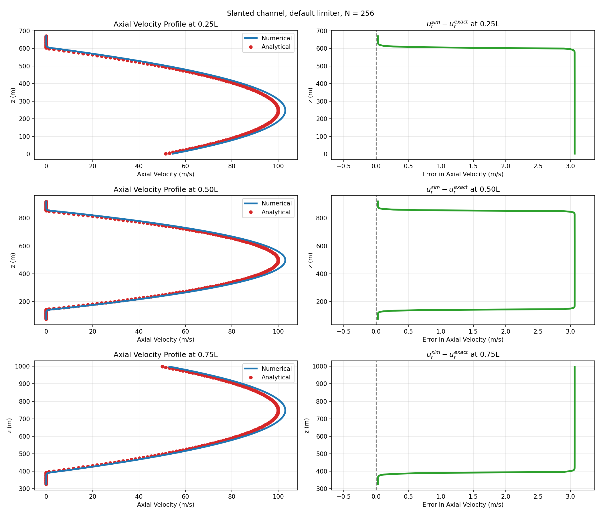

Laminar channel flow with immersed boundaries
This verification case measures the spatial convergence of pressure-driven,
single-phase laminar channel flow. It verifies both a flat channel aligned to
cell faces and a \(45^\circ\) slanted channel represented with
ChannelBuilder immersed boundaries. Non-immersed-boundary channel-flow
simulations provide a solver reference.
Contents
Channel configurations
In the flat channel configuration, the channel is aligned with the cell faces. This is accomplished by setting the channel position based on the coarsest mesh \((N_x, N_y, N_z) = (32, 4, 32)\). This way each consecutive refinement remains aligned with the IB.

In the slanted channel configuration, periodicty is maintained by defining three channels with the following start and end points for the ChannelBuilder segments:
\((0, 0, 0) \rightarrow (L_x, 0, L_z)\)
\((-L_x/2, 0, L_z/2) \rightarrow (L_x/2, 0, 3L_z/2)\)
\((L_x/2, 0, -L_z/2) \rightarrow (3L_x/2, 0, L_z/2)\)
Channel 1 is shown in the figure below:

Verification matrix
Case |
Geometry |
Implementation |
\(N_x\) |
|---|---|---|---|
Flat IB |
Cell-face-aligned channel |
|
32, 64, 128, 256, 512, 1024 |
Flat No IB |
Flat channel w/o IB |
N/A |
32, 64, 128, 256 |
Slanted IB |
\(45^\circ\) channel |
|
32, 64, 128, 256, 512, 1024 |
This produces 28 runs: 24 IB cases and four non-IB cases for reference. The
default configuration utilizes the current DragForcing implementation. original sets DragForcing.terrain_use_original_implementation = true.
Shared solver settings are provided in base.inp, and geometry-specific
settings are in flat-ib.inp, flat-no-ib.inp, and slanted.inp.
Each generated case explicitly includes the shared settings first and its
geometry-specific settings second. Generated immersed-boundary cases set DragForcing switches explicitly.
Analytical solution
For channel height \(H\), viscosity \(\mu\), and axial body-force magnitude \(F\), the fully developed Poiseuille solution is
For a centerline with unit tangent \(\boldsymbol{t}=(t_x,t_z)\), the analyzer projects numerical velocity onto that tangent and calculates the perpendicular distance using the in-plane unit normal \(\boldsymbol{n}=(-t_z,t_x)\). The analytical profile is zero outside the physical channel. Flat and no-IB reference errors are evaluated in the physical channel, \(r \leq H/2\). Slanted-channel errors use \(r \leq 0.6H\) to include a small surrounding region while excluding the periodic companion segments; this measures any velocity leakage there against the zero analytical solution. The reported metric is relative \(L_\infty\) velocity error; the analyzer also reports the observed order between adjacent resolutions.
Prerequisites
Use the kynema-sgf-env conda environment shared by the immersed boundary
cases. It contains the Python, NumPy, Matplotlib, and yt dependencies
required by the generator and analyzer.
From this directory, create the environment when necessary and activate it:
conda env create -f ../kynema-sgf-env.yml
conda activate kynema-sgf-env
An available Kynema-SGF executable is also required to run the generated inputs. Solver launch and resource selection are intentionally controlled by the user or the target HPC system.
Generate solver inputs
Generate the complete matrix with:
python python/generate_cases.py
The command writes solver directories and a manifest.json file directly in
cases/. Each directory contains inputs.inp, which includes the checked-in
shared and geometry-specific inputs, then overrides amr.n_cell and, where
needed, the drag-implementation settings.
Run the solver
Run the Kynema-SGF executable from every generated case directory with its
inputs.inp file. For example, after generating the full matrix:
cd cases/flat-default-n128
srun -N 1 --ntasks-per-node=50 kynema_sgf inputs.inp
The solver must produce AMReX plot-file directories named plt* in the same
case directory. The analyzer selects the plot file with the largest numerical
suffix, so each run may retain intermediate outputs and checkpoints.
Analyze convergence
After all jobs complete, run:
python python/analyze.py
The analyzer reads cases/manifest.json, validates each required velocity
component through yt, and loads each case’s final plot file. Cases without
a plot file are reported and skipped.
Outputs
Analysis results are written to cases/analysis/ by default:
flat_error_summary.csv(flat and no-IB reference cases) andslanted_error_summary.csvcontain the case metadata, selected plot file, sampled cell count, absolute and relative \(L_\infty\) error, and observed order.flat_convergence.pngcompares the two flat immersed-boundary implementations and overlays the no-IB reference (with a slope-2 line) when reference results are available.slanted_convergence.pngcompares the two slanted immersed-boundary implementations.slanted_<implementation>_velocity_profiles.pngshows the numerical and analytical axial-velocity profiles and their error at 0.25L, 0.5L, and 0.75L along the centerline, for the finest slanted case with \(N_x \leq 512\).
For a converged steady solution, the reference series should demonstrate the expected second-order trend. The immersed-boundary series quantify how alignment, orientation, and implementation selection affect that behavior.
Results
Results were produced with Kynema-SGF v4.2.0. The default temporal implementation outperforms the original implementation for both flat and slanted channels. Both immersed-boundary implementations show \(\mathcal{O}(h^{1/2})\) convergence for the flat and slanted channels, with the default implementation consistently producing lower errors. The flat channel without immersed boundaries converges at the expected \(\mathcal{O}(h^2)\) rate.


The velocity profiles for the slanted channel show that the default implementation produces a more accurate representation of the analytical solution, particularly near the channel walls. The original implementation overestimates the velocity everywhere, leading to larger errors in the velocity profiles.

